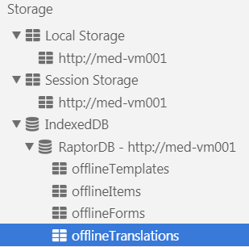

Offline functionality will use the browser’s built-in local storage. On the client side, ‘IndexedDB’ storage will be used. This storage method provides convenient read/write functionality from the browser’s built-in database.

The stored offline data is non-sensitive, and is necessary for the offline functionality to work. This data includes form and list configurations, look-up table data (with the exception of the tree and employee look-up tables), system settings, and translations.
In ‘My Settings’, the user can specify an offline PIN that they will use to access the application offline. The PIN will be encrypted and stored in the browser’s local storage.
myCority currently only supports basic offline functionality. This includes the ability to complete a new questionnaire and to create a new event report. The forms used to complete these tasks do not contain sensitive data; therefore, the data is not encrypted. When the application is back online, any data that was entered in a record will be cleared from the browser’s storage after upon submitting the record.
To use the offline functionality, your browser must be configured to allow caching and databases. If these are disabled, offline functionality will not work.